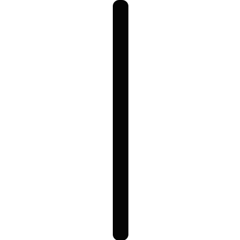
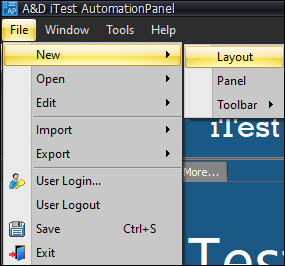
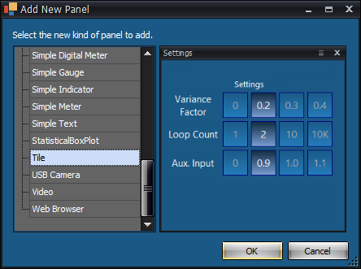
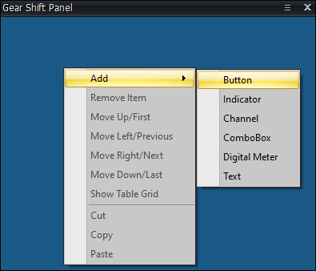
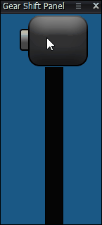
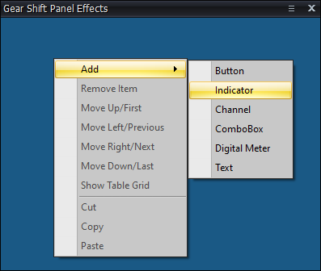
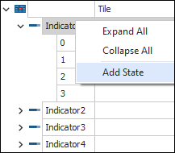
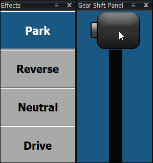

How to Use the Radio Click-Drag Property¶
Overview¶
The Radio Click-Drag property enables users to click a Radio button and while holding the mouse button down, drag the cursor to a different Radio button within the same panel that shares the same channel, and release the mouse button to select this other Radio button. This allows the user to use a series of Button tiles to create a graphical control that mimics the actions of a gear shift, light switch, lever, etc.
This document outlines an example method to use the Radio Click-Drag property to create a panel that presents a digital representation of a basic car gear shifter. For the purposes of this document, the following images will be used. Images, image placements, and texts may be changed to better suit your needs.
Gear Handle Image
Gear Shift Bar Image

Setting Up a Gear Shift Panel¶
To set up a gear shift panel, do the following:
- Launch AutomationPanel.
- Select a layout from the Layout tabs or add a new layout by selecting File > New > Layout.
Adding a New Layout

- Right-click the layout and select New Panel... or add a new panel by selecting File > New > Panel. This opens the Add Panel dialog.
Add a New Panel Dialog

- Select the Tile panel. Rename the panel by opening Property Manager and changing the name.
- Right-click the Tile panel and select Add > Button. Repeat this step for the number of buttons you want to add. For the purposes of this guide, four buttons will be added. Resize the panel as necessary.
Add Button

- Open the Property Manager.
- Set Radio Click-Drag to True under the Tile properties.
- For this example, we used the following property configuration for each button:
- Image Placement: MiddleCenter
For most cases, Stretch is a more appropriate selection, but it can lead to a pixelated look. For this example, we chose Middle Center to sidestep this issue and to crop the tops and bottom of the bar to create a more seamless look.
- Style: NoBorder
Unless the intention is to create some kind of sectioned look, this should always be selected to create a seamless appearance.
- Button Type: Radio
Always required to use the Radio Click-Drag property.
- Channel: Cntr1
For this example, we used the generic Cntr1 virtual output channel to store the value representing the position of the gear shifter.
- Radio Value: 0, 1, 2, etc.
Always required. Any value or range of values can be used for the Radio Value. Any buttons that share the same Radio Value will activate/deactivate together.
- Image Off: Gear Shift Bar Image
- Image On: Gear Handle Image
- Text Off: (Leave blank)
- Text On: (Leave blank)
After any additional customization, the Gear Shift panel can now be used. To see its effects, refer to the section below.
Gear Shift Panel

Gear Shift Panel Effects¶
To see the Gear Shift panel effects, do the following:
- Right-click the layout in AutomationPanel and select New Panel... or add a new panel by selecting File > New > Panel. This opens the Add Panel dialog.
Add a New Panel Dialog
- Select the Tile panel. Rename the panel by opening Property Manager and changing the name.
- Right-click the Tile panel and select Add > Indicator. Repeat this step for the number of indicators you want to add. For the purposes of this guide, four buttons will be added. Resize the panel as necessary.
Add Indicator

- Open Property Manager.
- Add a state to each indicator by right-clicking each indicator and selecting Add State. The amount of states added are dependent on the amount of radio buttons you have. For this guide, there will be four states per indicator.
Add State

- Under the Tile properties, set the channel to Cntr1 and indicator type to Both String and Color. These properties may differ.
- Customize each indicator state to display the information you want to display based on the radio value. For example, Button 1 triggers Indicator 1 when the radio value is 0. Indicator 1 will then display the word "Park" in white font and a blue background. Button 2 triggers Indicator 2 when the radio value is 1. Indicator 2 will then display the word "Reverse" in white font and a blue background, and Indicator 1 will display the word "Park" in black font and a gray background.
Once you have finished customizing each indicator state, you can use the Gear Shift panel to manipulate the indicator panel. Together, the two panels create a digital representation of a car gear shift.
Gear Shift Panel Effects
